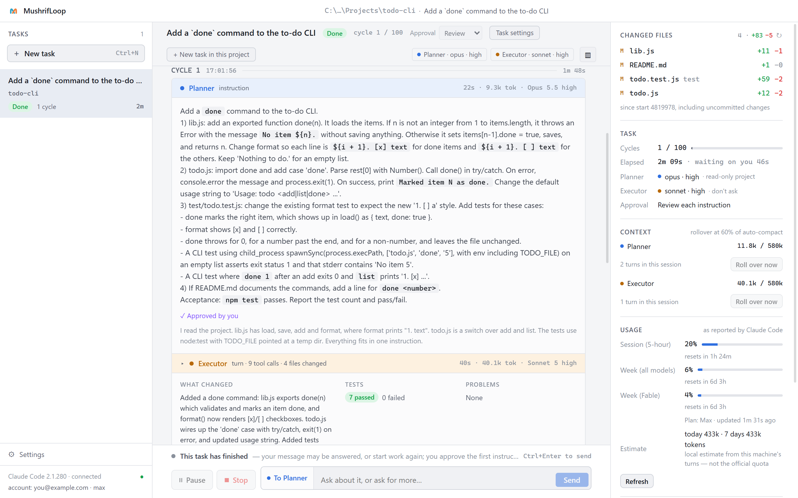
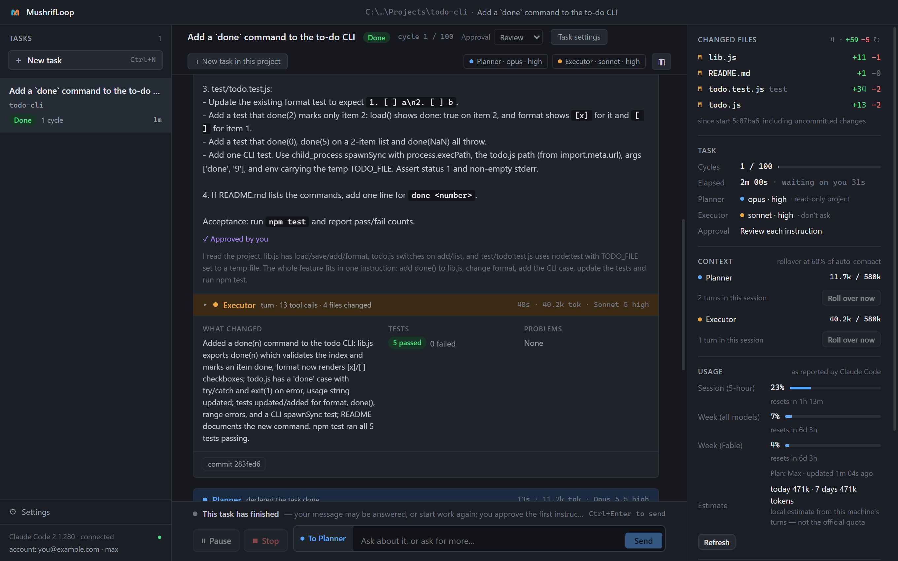
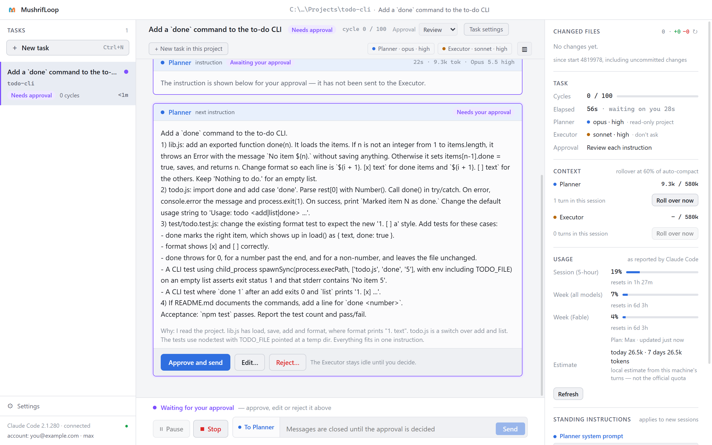
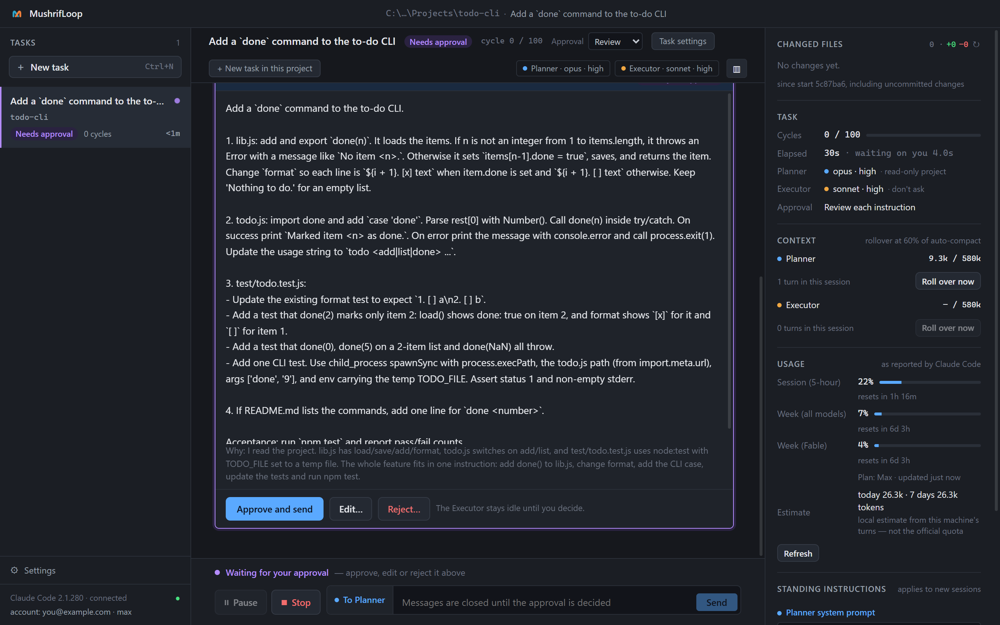
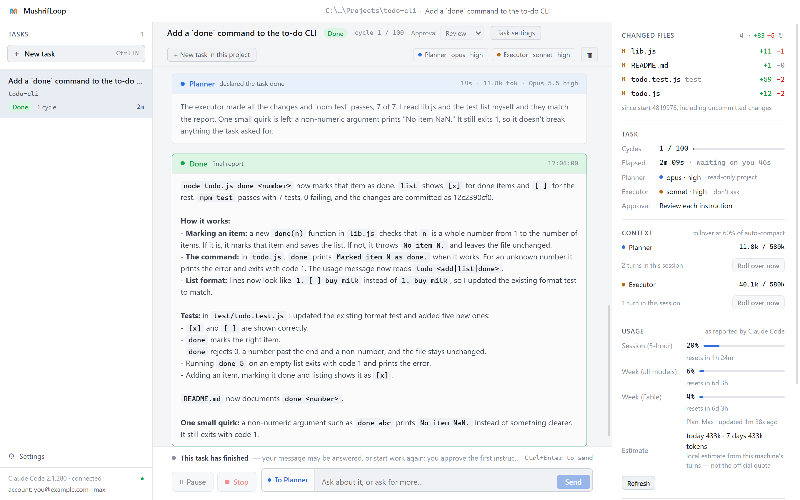
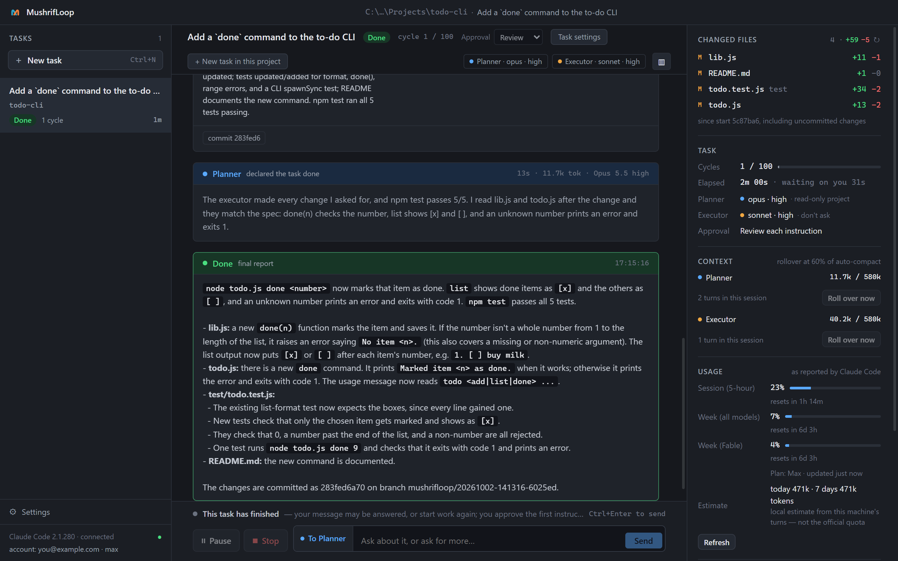
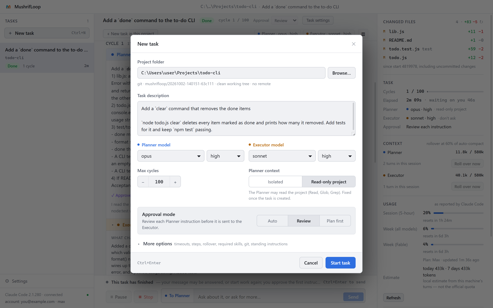
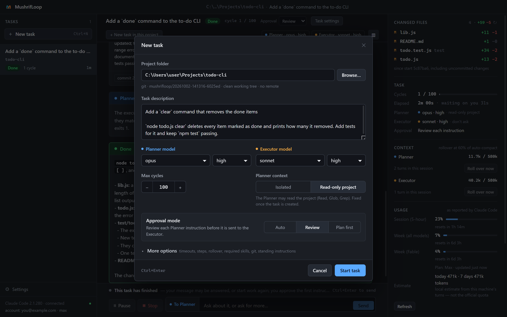

مشرف/mushrif/supervisor
جلسة تخطّط، وجلسة تنفّذ، والقرار لك.
MushrifLoop منسّق (orchestrator) لـ Claude Code: برنامج سطح مكتب لويندوز يشغّل مهمة البرمجة كحلقة بإشراف بين جلستين على حاسوبك أنت. ينقل كل خطوة بين الجلستين، ويضبط الحدود، ويتوقف ليسألك كلما كان القرار قرارك.
كيف يعمل
خطوة واحدة في كل مرة، وكل خطوة تُراجَع.
المهمة لا تذهب إلى جلسة واحدة لتنهيها وحدها. تدور في حلقة، وللحلقة صاحب.
-
Planner يقرّر
يقرأ المهمة ومشروعك، ويكتب تعليمة واحدة للخطوة التالية. لا يلمس ملفاتك أبداً.
-
Executor ينفّذ
ينفّذ تلك الخطوة في مجلد مشروعك، ثم يبلّغ بما غيّره وما شغّله.
-
Planner يراجع
يقارن التقرير بالمهمة. بعدها تأتي الخطوة التالية، أو النهاية، أو سؤال لك.
شاهده
مهمة حقيقية، من التعليمة إلى التقرير.
هذه شاشات البرنامج نفسه، على مشروع تجريبي صغير: «أضف أمر done إلى قائمة مهام». أخذت المهمة دورة واحدة ودقيقتين.








ما تحصل عليه
الإشراف جزء من كل خطوة.
هو Claude Code نفسه الذي تستعمله، ومعه صاحب للحلقة.
- الإشرافكل تعليمة يمكنك قراءتها والموافقة عليها قبل أن تصل إلى Executor.
- تدقيق كل خطوةجلسة ثانية تقارن كل نتيجة بالمهمة قبل أن تبدأ الخطوة التالية.
- التنسيقالبرنامج ينقل العمل بين الجلستين، ويتولى السياق والحدود والتسليم بينهما بنفسه.
- المتابعةخط زمني لكل دورة، وcommit لكل دورة، وسجل كامل لكل دور.
- وقتكالمهمة الطويلة تعمل وحدها، وتناديك فقط حين يكون القرار قرارك.
بين الجلستين
البرنامج يضبط الحدود، فلا تُترك للنماذج.
لا شيء من هذا متروك للنموذج. المنسّق يفرضه من خارج الجلستين.
- الموافقاتشغّل المهمة بلا توقف، أو اقرأ كل تعليمة قبل إرسالها، أو وافق على خطة كاملة أولاً.
- حدّ للدوراتالمهمة تتوقف عند عدد الدورات الذي تحدده.
- مهلة لكل دورالدور الذي يطول يُوقَف، مع كل العمليات التي شغّلها.
- كشف الدورانإذا تكررت الخطوة نفسها، يُكشف ذلك وتتوقف المهمة.
- commit لكل دورةعلى فرع خاص بالمهمة. فرعك يبقى كما كان.
- فحص الحسابترى أي حساب Claude سيعمل عليه الدور قبل أن يبدأ.
- حدود الاستخدامعند بلوغ الحد تتوقف المهمة مؤقتاً مع بقاء الجلستين، لتكمل بعد تجدّد الحد.
- سجل كاملكل تعليمة، وكل تقرير، ومخرجات CLI الخام محفوظة على حاسوبك.
بصراحة
كم يستهلك.
يعتمد ذلك على حجم المهمة، وعلى ما تقارنه به.
في قياساتنا الأولى، وPlanner يعمل على Opus وExecutor على Sonnet، كلّفت المهام الصغيرة والمتوسطة أقل بنحو الربع من جلسة Opus عادية. وكلّفت المهام الكبيرة أكثر من الضعف بقليل.
مقارنةً بجلسة Sonnet عادية كانت الكلفة أعلى في كل الأحجام. وحصة Planner من الكلفة صغيرة: نحو 6% في المهام الكبيرة.
يأخذ وقتاً أطول من الجلسة العادية، قرابة الضعف في المهام الكبيرة، لكنه لا يحتاجك أثناء العمل. وأنهت الطرق الثلاث المهام المتوسطة والكبيرة بالجودة نفسها.
أرقام أولية: 22 مهمة، وتشغيلة واحدة لكل مهمة. المقارنة الكاملة جارية، وستُنشر أرقامها هنا أياً كانت.
التنصيب
نزّله وشغّله، وهو يفحص الباقي.
- نصّب Claude Code وسجّل الدخول، إن لم تكن فعلت.
- نزّل ملف التنصيب أو النسخة المحمولة من صفحة الإصدارات.
- شغّله. الإعداد الأول يتأكد أن Claude Code موجود، وبإصدار كافٍ، ومسجَّل الدخول، قبل أن تبدأ.
ويندوز سيعرض تحذيراً
ملف التنصيب غير موقَّع رقمياً بعد، لذلك يعرض SmartScreen رسالة "Windows protected your PC". اختر More info ثم Run anyway. كل إصدار يذكر بصمة SHA-256 لملفاته. افحص ما نزّلته بهذا الأمر:
certutil -hashfile <file> SHA256
بياناتك
كل شيء يبقى على حاسوبك.
MushrifLoop لا يتصل بواجهة Anthropic البرمجية بنفسه أبداً.
-
حسابك أنتكل دور هو عملية
claudeعادية وغير معدَّلة، تعمل بحساب من سجّل الدخول في Claude Code. ليس للبرنامج حساب ولا مفتاح ولا فوترة. - بلا تتبّعالبرنامج لا يجمع شيئاً. الطلب الوحيد الذي يرسله بنفسه يسأل سجل npm عن آخر إصدار من Claude Code.
-
ملفات محليةالمهام والإعدادات والسجلات في
%APPDATA%\MushrifLoop، وتبقى هناك عند إزالة البرنامج إلا إذا اخترت غير ذلك.